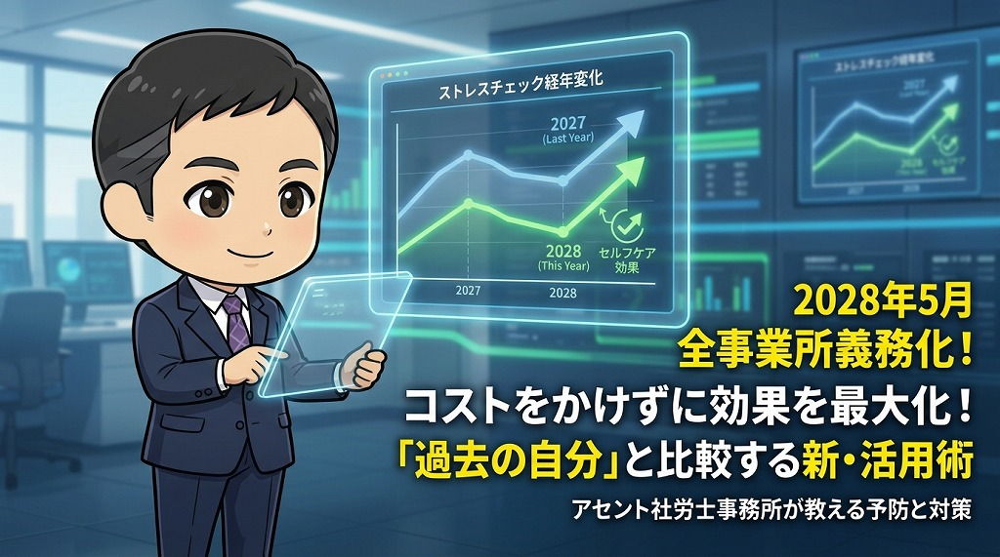

2028年5月までに全事業所で義務化！「コストをかけずにストレスチェックの効果を高める方法」

大阪を中心にサービス業などの人事労務をサポートするアセント社労士事務所です。
労働安全衛生法の改正により、2028年5月までに従業員50人未満の事業所でもストレスチェックが義務化されます。本記事では、制度改正の概要とともに、小規模な事業所でも負担を抑えつつ、従業員のメンタルヘルス不調を未然に防ぐための具体的な活用術を専門家の視点で解説します。
ストレスチェック制度の義務化範囲が拡大
現在、ストレスチェック制度は常時50人以上の従業員を使用する事業所に実施が義務付けられています。しかし、近年の法改正により、この義務化の対象が全事業所へと拡大されることが決定しました。
具体的な施行時期は正式に発表されていませんが、法改正から3年以内、遅くとも2028年5月までには全ての事業所で実施が必要となります。これまで実施義務がなかった50人未満の小規模な事業所や店舗においても、あと2年ほどで対応を完了させなければなりません。
制度開始から10年が経過した現状
ストレスチェック制度は2015年12月に始まり、すでに10年が経過しました。しかし、社会全体を見渡すと、メンタルヘルス不調を訴える労働者は増加傾向にあります。
「ストレスチェックを実施しているのに、なぜ不調者が減らないのか」という疑問を抱く経営者や人事担当者も少なくありません。特に法改正でこれから実施を開始する小規模な会社では、制度の形骸化や実施コストへの懸念が強いのが現状です。
現行のストレスチェック制度が抱える課題
ストレスチェックの本来の目的は、労働者自身のストレスへの気付き（セルフケア）と、職場環境の改善です。しかし、現在の運用方法にはいくつかの課題が存在します。
「平均値」との比較による限界
多くのストレスチェックサービスでは、厚生労働省が推奨する「職業性ストレス簡易調査票（57項目）」を使用します。回答結果は一般的な平均値と比較され、一定の基準を超えると「高ストレス者」と判定されます。
しかし、ストレス耐性は個人差が非常に大きいものです。同じ負荷がかかっても、平気な人もいれば、深刻な不調に陥る人もいます。身体的な健康診断の数値（BMIや血液検査の結果など）とは異なり、メンタル面において「平均から外れているから異常」と一概に断定することは論理的に困難です。
高ストレス判定の信憑性
高ストレス者と判定された場合、希望者は産業医による面談を受けることができます。しかし、判定基準が画一的であるため、判定が出たからといって必ずしも不調のリスクが高いとは限りません。逆に、判定が出なくても不調を隠しているケースもあります。
コストを抑えて効果を最大化する「過去の自分」との比較
小規模な事業所やサービス業の現場で、コストをかけずにストレスチェックを有効活用するための鍵は「比較対象の変更」にあります。
高価な独自サービスは不要
ストレスチェックを導入する際、100項目以上の設問を設けた高額な外部サービスを検討する必要はありません。厚生労働省が提供している無料のツールや、標準的な57項目のアンケートで十分な効果が得られます。
「周り」ではなく「過去の自分」と比べる
最も重要なのは、他人の平均値と比較するのではなく、「1年前の自分の結果」と比較することです。ストレスチェックは毎年実施されるため、個人の中で以下の変化を追跡できます。
- 項目の変化を特定する
「去年よりイライラすることが増えた」「以前よりも疲労感が抜けにくくなった」など、スコアが悪化している具体的な項目を確認します。 - 原因の追及と対策
特定の項目が悪化している場合、その1年間で業務内容や生活環境にどのような変化があったかを確認し、早期に対策を講じます。 - 自己認識（セルフケア）の向上
自分自身の心の変化に自ら気付くことが、メンタルヘルス不調を防ぐ第一歩となります。
メンタルヘルス対策におけるセルフケアの重要性
メンタル不調対策には、本人が行う「セルフケア」と、管理職が行う「ラインケア」の2軸があります。ストレスチェックを「義務だからやる事務作業」として終わらせず、質の高いセルフケアツールとして位置づけることが重要です。
職場環境改善への活用
個人ごとの比較に加え、部署単位での傾向を把握する「集団分析」も活用しましょう。特定の部署で全体的に数値が悪化している場合、個人の資質ではなく、業務量や人間関係などの職場環境に問題がある可能性が高いと判断できます。
特にサービス業など、対人ストレスが発生しやすい現場では、数値の変化を定点観測することで、決定的なトラブルが起こる前に体制を見直すことが可能になります。
まとめ：全事業所義務化に向けた備え
2028年5月の全事業所義務化に向け、中小企業や店舗経営者は今から準備を進める必要があります。
- 義務化の期限：遅くとも2028年5月までに全事業所で実施が必要
- コスト抑制のコツ：厚生労働省推奨の57項目で十分。高額なオプションは不要
- 効果を高める方法：他人との比較ではなく、過去の自分との比較を推奨する
- 運用のポイント：従業員が「自分の変化」に気づくためのセルフケアツールとして活用する
社労士へのご相談はこちら
アセント社労士事務所では、大阪のサービス業を中心に、負担の少ないストレスチェックの導入支援を行っています。
制度の形式的な導入に留まらず、従業員の定着率向上や生産性の改善につながる労働環境づくりをサポートいたします。